Tile Editor and Sprite Sheets
This lesson covers how to use the Tile Editor, create tile maps, and further utilize the Sprite Sheet Importer.
Learning Objectives
- Create a new tile map from a sprite sheet using the Sprite Importer tool
- Design a level with tiles by using Tile Editor tool
- Create a tile palette
| Vocabulary | |
|---|---|
| Tile Editor | Tile Palette |
Create a New Project
Creating a Tile Map
You can open TileEditor2D from the drop down menu in the Tools Window.
- Select The TileEditor2D option from Tools
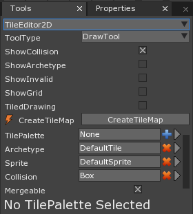
If there is no TileMap in the project, you can add a new by clicking on the text in the Level Window:
Loading in Sprites for a Tile Map
Now we have to load in our Sprites. First we will need to obtain a usable Sprite Sheet for the tiles:
- Using The Void :
Using The VoidDownloadPF_Platformer platform.png
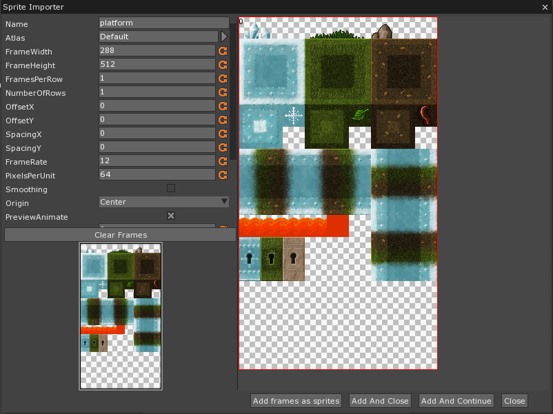
- In the Library Window
Double-ClicktheSpriteSourcetagDouble-ClicktheplatformSpriteSource
This is the same editor we use for static and animated sprites. This time we’ll use it to import each tile in the image as separate sprites.
Click
Convert to AnimationSet the following properties in the Sprite Source Editor:
- Set FramesPerRow to: 9
- Set NumberOfRows to: 16
- Set PixelsPerUnit to: 32
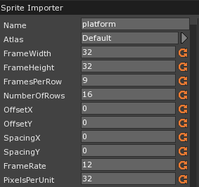
Each tile should fit correctly in the grid. We could include every tile in the tile sheet, but some tiles are empty and would just take up space. Instead, we will manually choose the tiles we want.
In the Sprite Importer Window
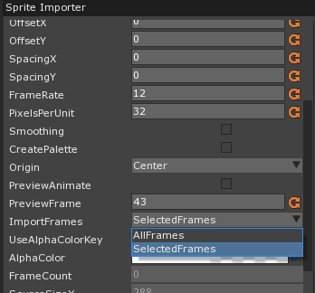
We can now Left-Click each tile that we want to import. If you make a mistake, you can click a selected tile, making it blue, and hit the delete key to deselect it.
Once you’ve selected your sprites, Click on Add frames as sprites. You can now go back to the TileEditor2D.
Placing Tiles
- In the sprite drop down menu, change DefaultSprite to the tile of your choice
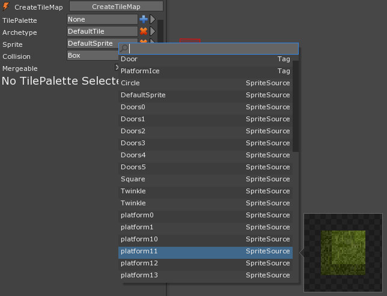
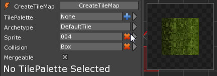
Draw Tool
By default the DrawTool is selected.
Left-Click and drag to draw tiles onto your level.
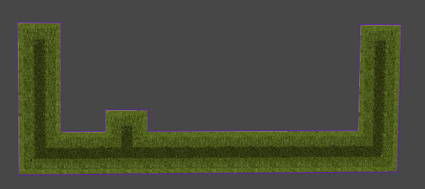
Right-Click and drag to remove tiles.
Selection Tool
With the selection tool, you can duplicate parts of your Tile Map.
In the Tools Window
- Set ToolType to: SelectionTool.
In the Level Window
- Click and drag a blue box around the tiles.
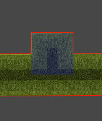
To more easily change to the selection tool, when using the draw tool hold down Shift and begin dragging in the Level Window
By Right-Clicking your current selection, you switch back to the DrawTool and are able to place those tiles by Left-Clicking. This is now considered your active selection.
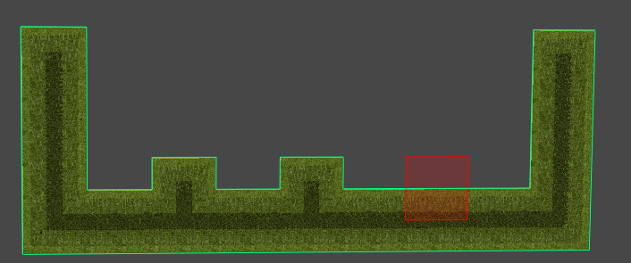
If you want to save or maintain a selection of tiles, you need to use a TilePalette.
Using Tile Palettes
- Click the Blue Plus next to TilePalette in the Tools Window.
- Give your TilePalette a name and choose Create
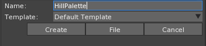
Left-Clickinside the Tile Palette to add a tile.Right-Clicka tile in the Tile Palette to delete it.
You can also populate your Palette with things from your Level Window.
- Create an active selection
- In the Tools Window
- In the Tile Palette
- Press
Shift+Right-Clickon the top-left most tile
- Press
- In the Tile Palette
Your Selection is now saved in the current TilePalette. Not only can you copy the entire TilePalette, but parts of it as well.
Left-Clickand drag in the TilePalette editor to select part of the TilePalette.
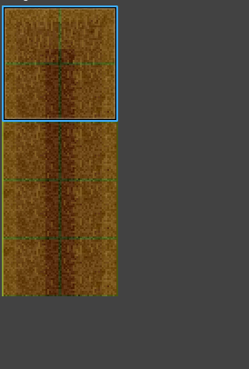
The selection is now an active selection.
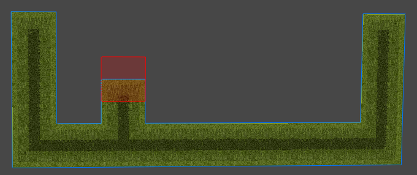
TileEditor2D Options
Other useful, commonly used options include:
- ShowCollision: Displays a boundary around all collision tiles.
- ShowGrid: Displays the grid to which all the tiles snap.
- CreateTileMap: Creates a new tile map.